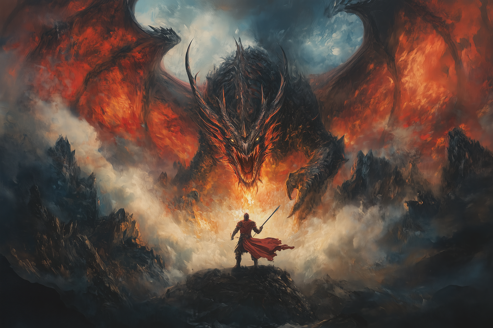
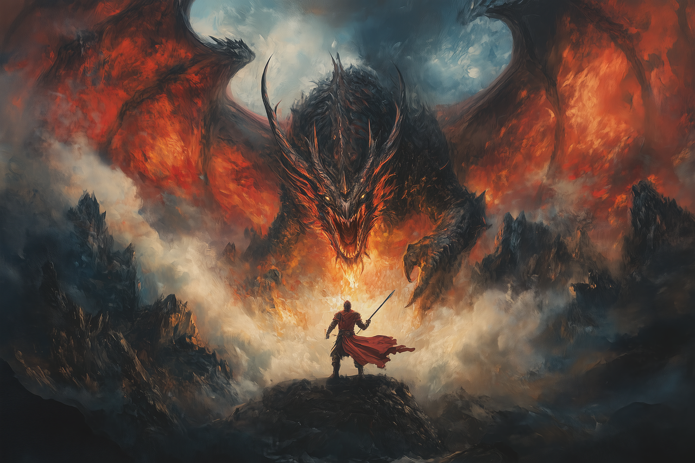
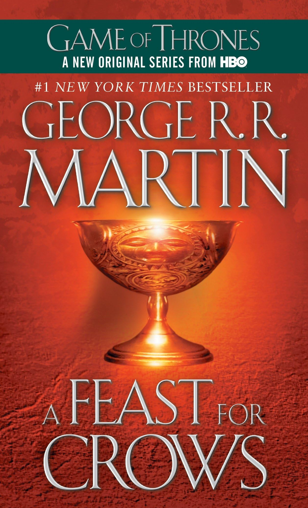
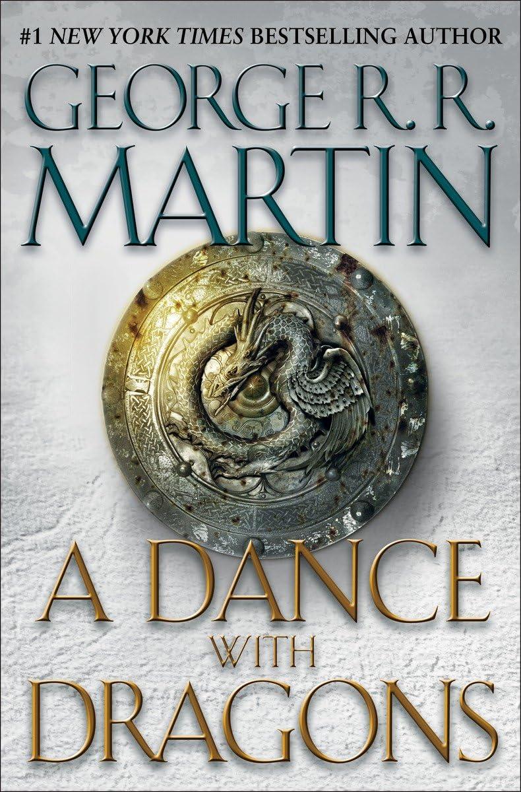

A Song of Ice and Fire
A Song of Ice and Fire is a series of high fantasy novels by the American author George R. R. Martin. It depicts a violent world dominated by political realism.
Learn More A Song of Ice and Fire is a series of high fantasy novels by the American author George R. R. Martin. It depicts a violent world dominated by political realism.
Learn More The first book, A Game of Thrones, released 1996.
The second book, A Clash of Kings, released 1998.
The third book, A Storm of Swords, released 2000.
The fourth book, A Feast for Crows, released 2005.
The fifth book and most recently-released book, A Dance with Dragons, released 2011.